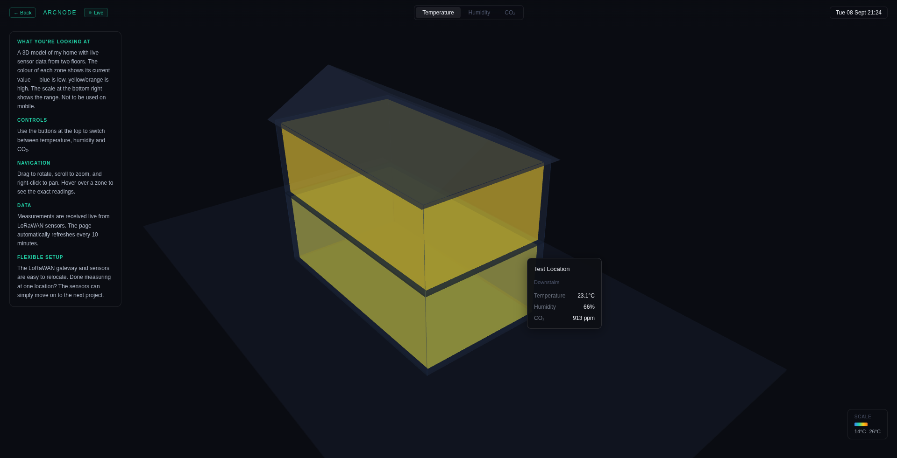

ARCNODE / LAB
I use small working systems to explore technologies, test assumptions and figure out how a problem behaves before deciding what should be built around it.
Some become products. Some become client work. Some just teach me something.
Not case studies, just proof of curiosity.
PREVIEW · SENSORCANVAS · LIVE BUILD

A live playground for sensor data and digital twins. SensorCanvas started as an experiment in getting physical sensor data all the way from LoRaWAN devices into something that is actually useful to look at. Data is collected, normalised and presented in a live dashboard that mirrors the system being measured.
The interesting part isn't the dashboard itself, but the chain behind it: device → network → data processing → storage → interface.
OPEN LIVE EXPERIMENT ↗PREVIEW · CLUBSCOUT · PLAYER PROFILE
PREVIEW · CLUBSCOUT · TELEGRAM ALERT
A football scouting tool built around a database of roughly 18,000 players. ClubScout explores what happens when player data, transfer information and automated monitoring are brought into one workflow — clubs can inspect player profiles and receive notifications when something relevant changes.
The profile and the Telegram alert belong to the same system: the interface and the automated notification are two views on one pipeline, not two separate tools.
PIPELINE · MULTILINGUAL MEDIA TRIAGE
✎ Derived from a client news-monitoring proof of concept — kept fully generic here, no client name, branding or real data.
An experiment in finding relevant incidents in multilingual news without asking an AI model to invent the underlying facts. The pipeline collects articles across languages, translates the parts needed for review, applies local language models for relevance classification and structured metadata, and presents candidates for human review.
The experiment is partly about a boundary: what can safely be automated, and what should remain a human decision?
Building a small working version is often the fastest way to understand a problem.
The Lab is where I can test an integration, architecture or product idea before knowing whether it deserves to become something larger. That might lead to a product, become useful in client work, or simply leave behind a technical pattern worth reusing.
The point isn't to make every experiment succeed. It's to learn something concrete by making it work.
Stack